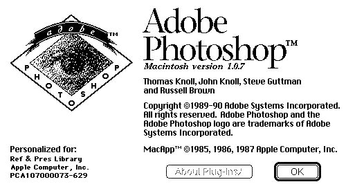
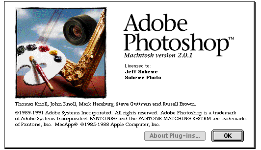
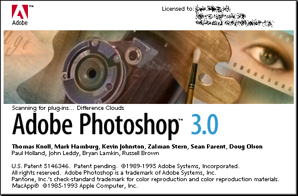
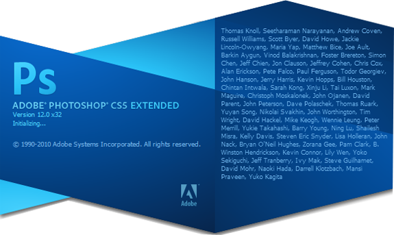

|
It has done wonders for all designers, photographers and hobbyists by providing a one-program solution for all the design needs. It is very flexible, easy to use and readily available. Its tools are so perfectly fitting for all the design needs, you’ll never look for another! This is the main reason why we all love this amazing program, right?
But behind all of these quirky features, do we all know where it all began? Aren’t we all curious where our favourite software came from? Who made it? Well, this calls for a history lesson.
|
Version
|
Date of Release
|
Reqirments
|
Feature
|
Pictrure
|
|
Photoshop 1.0
|
February 1990
|
8 MHz, color screen and at least 2 MB RAM,
Mac System 6.0.3,
68000 processor,
Floppy drive
|
Color correction facility with balance, hue and saturation and Image Output Optimization was introduced also
|

|
|
Photoshop 2.0
|
June 1991
|
Mac System 6.0.7,
4 MB RAM,
68020 Processor,
32-bit QuickDraw,
Floppy drive.
|
Slight changes like paths in which it furnishes with creation of line based drawings and thus it becomes easier in manipulating. And for this purpose Pen Tool was introduced,
CMYK color mode support,
Masking was introduced.
|

|
|
Photoshop 2.5
|
November 1992
|
Supported Microsoft Windows for the first time.
Also supports IRIX, Solaris.
|
Slight changes like Palettes were introduced and 16 bit channel support.
|

|
|
Photoshop CS5
|
April 2010
|
Windows XP (Service pack 3) Vista Home, Business or Enterprise Edition, Windows 7 Mac,
Processor: Intel Pentium 4 or AMD Athlon 64 processor
Memory: 1GB RAM + 1Gb Hard-disk space
Monitor Resolution: 1024X768 (1280×800 recommended)
Windows Mac OS
OS X v10.5.7 or 10.6.3 or later,
Multicore Intel processor,
1GB RAM + 2Gb Hard-disk space
|
Content Aware Fill,
Intelligent selection technology,
Advanced HDR processing,
Improved raw processing,
Extended painting effects,
Localised Warp tool,
Auto lens correction,
Workspace management,
Advanced 3D options (CS5 Extended),
and 30 JDI (Just Do it) additions.
|

|
|
|
Previous page Next page
|
|
_____________________________________________________________________
All Rights reserved - Moutasim Al-Sohly
|
|